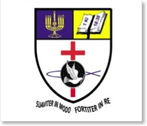

History of Mount Carmel Theological College
The College started as the School of Theology and Ministry (STM) in September 1996 changing to College of Theology and Ministry (CTM) in 1997. We operated at these venues: Lighthouse Church, Rajawella and Lighthouse Church, Galaha.
The College, with our motto, “Gentle in manner, resolute in execution” does not raise funds through any means. The main income is tea that is grown by the students themselves on 6 acres of land. On top of tea, the College grows Cinnamon, Cardamom, Cloves, Green and black Pepper.
Why start another bible college?
- There are many who are called by God into ministry but do not posses formal secular school education to enable them to enter into an existing Bible College. Our firm conviction, we believe from God, is that our students could be literate, semi literate and even illiterate. We are to teach them to become educated ministers over a period of 4 years – a challenge we took on board and are successful so far.
- There are may who are called by God but do not posses the character to be recommended by a pastor and 2 non related referees. We are to take those individuals alongside those who would be acceptable to all colleges and train everyone to become highly recommendable servants of God.
- Many called ones do not have the money to pay for their Bible College training. Their Churches cannot afford to pay for them either. We are to train them free of charge. It is for this reason and for their future use that the work in the land on several money making projects. Thus, our graduates have not looked to raise funds or pressurize their Churches once they are in the active ministry.
- When the academics and knowledge increases, many tend to shift their reliance from the Holy Spirit to what they have learned from books. We are committed to emphasizing the need of both the academics and the anointing of the Holy Spirit. So, we are a College that offers solid education but with a great Pentecostal emphasis.